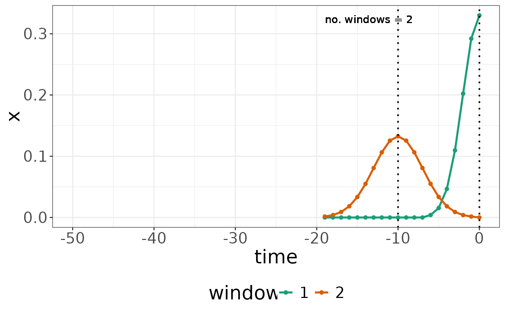
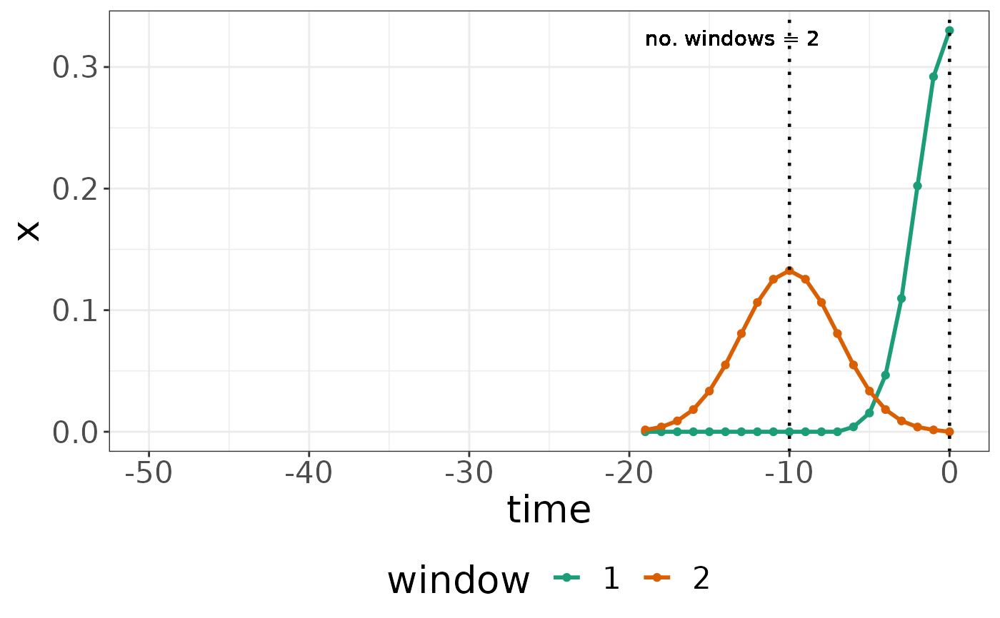

Return and plot accumulated kernel
get_kernel.RdReturn and plot the accumulated kernel, consisting of one or multiple windows
Usage
get_kernel(param, mix = NULL, kernel_type = "single", weighted = TRUE)
# S3 method for SWR
coef(object, ...)
plot_kernel(
list = NULL,
param = NULL,
mix = NULL,
kernel_type = "single",
weighted = TRUE,
xlim = NULL,
include_text = TRUE,
scales = "fixed"
)
# S3 method for SWR
plot(x, type = "kernel", ...)Arguments
- param
a matrix with 2 columns representing one window per row. The first column contains location parameters delta, the second column contains the standard deviation sigma.
- mix
a vector of mixing parameters (beta)
- kernel_type
a String indicating whether (a) all single windows (option: "single"), or (b) the combined kernel (option "combined")
- weighted
if TRUE, windows are weighted with mix parameters; default: TRUE
- object
an
SWRmodel object created using trainSWR- ...
further plotting parameters, see plot_kernel or plot_prediction, respectively
- list
a list containing multiple trained SlidingWindowReg models
- xlim
vector with lower / upper bound of the x axis to print the kernel
- include_text
if TRUE, plots will be annotated
- scales
whether scales should be shared across multiple sub-plots ("fixed"), or free ("free")
- x
an
SWRmodel object- type
either "kernel" to produce a plot of the window kernels, or "prediction" to plot the model predictions, see plot_prediction
Functions
get_kernel(): return the kernel of anSWRmodelcoef(SWR): return the kernel of anSWRmodelplot_kernel(): plot the kernel of anSWRmodelplot(SWR): plot the kernel of anSWRmodel
Examples
param <- cbind(
delta = c(0, 10),
sigma = c(2, 3))
mix <- rep(1, ncol(param))
mod <- createSWR(param = param, mix = mix)
get_kernel(param = param, mix = mix)
#>
#> kernel1 0.000000000 0.000000000 0.000000000 0.00000000 0.00000000 0.00000000
#> kernel2 0.001534648 0.003912432 0.008934251 0.01827455 0.03348232 0.05495003
#>
#> kernel1 0.00000000 0.0000000 0.0000000 0.0000000 0.0000000 0.0000000 0.00000000
#> kernel2 0.08078044 0.1063732 0.1254721 0.1325721 0.1254721 0.1063732 0.08078044
#> -6 -5 -4 -3 -2 -1
#> kernel1 0.004017088 0.01545604 0.04653623 0.109659595 0.202259910 0.292021009
#> kernel2 0.054950035 0.03348232 0.01827455 0.008934251 0.003912432 0.001534648
#> 0
#> kernel1 0.3300501
#> kernel2 0.0000000
coef(mod)
#>
#> kernel1 0.000000000 0.000000000 0.000000000 0.00000000 0.00000000 0.00000000
#> kernel2 0.001534648 0.003912432 0.008934251 0.01827455 0.03348232 0.05495003
#>
#> kernel1 0.00000000 0.0000000 0.0000000 0.0000000 0.0000000 0.0000000 0.00000000
#> kernel2 0.08078044 0.1063732 0.1254721 0.1325721 0.1254721 0.1063732 0.08078044
#> -6 -5 -4 -3 -2 -1
#> kernel1 0.004017088 0.01545604 0.04653623 0.109659595 0.202259910 0.292021009
#> kernel2 0.054950035 0.03348232 0.01827455 0.008934251 0.003912432 0.001534648
#> 0
#> kernel1 0.3300501
#> kernel2 0.0000000
plot_kernel(param = param, mix = mix)

plot(mod, type = "kernel")
